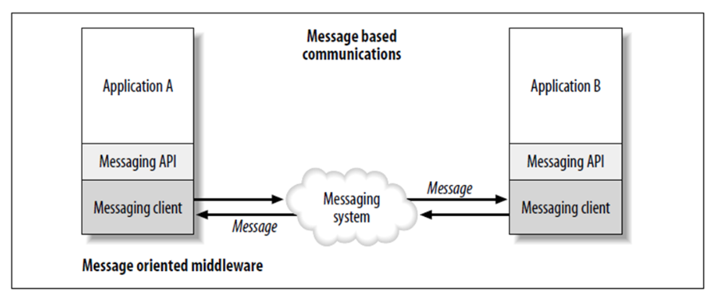

1. Introduction
Message oriented middleware or "MOM is a key part of the ESB architecture" (Chappell, David A., 2004). It is a concept of exhanging information and data between two applications.
In MOM based communication messages, events, reports or any type of data that is exchanged between the applications are usually asynchronus.
In this architechture the applications are abstractly decoupled, that is the producer and consumer of the data is never aware about each other. They make a use of MOM to send and recieve the information.
We will see the two important message oriented middleware products in our tutorial.
Image credit: Enterprise Service Bus by David A Chappell Chapter 5